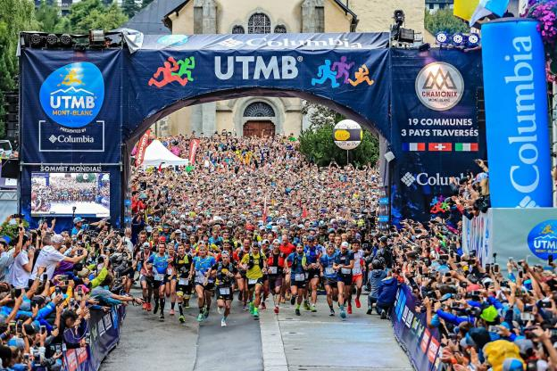
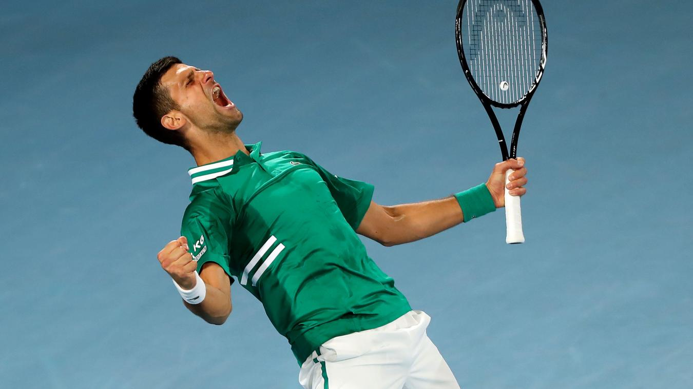

La Course à pied.
La course à pied est une discipline qui se pratique en extérieur. Mais il existe deux types de courses à pied : La course sur piste pour améliorer sa vitesse et travailler ses accélérations et la course hors-piste (sur route) pour privilégier l’endurance. Il existe aussi un dérivé de la course à pied, le trail. Le trail est une discipline qui se pratique dans la nature. La différence fondamentale avec la course sur piste ou hors-piste est le dénivelé. Les pistes d’athlétisme étant plates, le dénivelé des courses est nul. Les organisateurs des courses sur route essayent plus ou moins de trouver un parcours avec un dénivelé nul. En revanche les trails ont un dénivelé positif. Deux autres différences sont observables, la distance et la gestion de l’effort. En effet, les courses sur piste varient de 60 m à 10 000 m, les courses sur routes varient de 5 km à 42,195 km et les trails varient de 42 km à 171 km en France avec l’UTMB (Ultra trail du Mont-Blanc) qui traverse trois pays, la France, l’Italie et la Suisse. La gestion de l’effort est aussi très différente. En course sur piste ou sur route, les coureurs ont pour but de trouver l’allure qu’ils pourront tenir toute la course sans marcher. Au contraire, pour les trails les coureurs doivent s’adapter à leur environnement. Ils doivent souvent alterner entre course et marche pour ne pas dépenser inutilement de l’énergie.

Le Tennis.
Le tennis est une discipline pouvant se pratiquer à l’intérieur ou à l’extérieur. Plusieurs revêtements existent : pour les revêtements durs il existe la résine et l’asphalte. De nombreux grands tournois se déroulent sur du revêtement dur : l’Open d’Australie, l’Us Open et les masters 1000 (Cincinnati, Indian Wells, Madrid, Miami, Monte Carlo Montréal/ Toronto, Paris, Rome et Shanghai). Les revêtements en gazon existent aussi en synthétique ou en naturel. Le tournoi le plus connu est Wimbledon à Londres. La terre battue est aussi un revêtement utilisé sur les circuits ATP (Association of tennis Professional) et WTA (Women’s Tennis Association). Les principaux tournois sur terre battue sont : Barcelone, Madrid, Rome et Roland-Garros. Les classements ATP et WTA sont établis avec les points qu’un joueur gagne en fonction de son parcours dans un tournoi. Pour les Grands-Chelems par exemple, si un joueur passe le 1er tour il gagne 10 points puis 45 points pour le 2eme tour et ainsi de suite jusqu’à gagner 2 000 points s’il remporte la finale. Les gain de points varient en fonction de la catégorie du tournoi : ATP 250, ATP 500, Masters 1000, Masters de Londres et les Grands Chelem, le nombre représente le nombre de points que le vainqueur du tournoi remporte. Le masters de Londres est un tournoi important puisqu’il regroupe les 8 meilleurs joueurs ayant gagnés le plus de points durant la saison. Il se déroule au mois de Novembre.